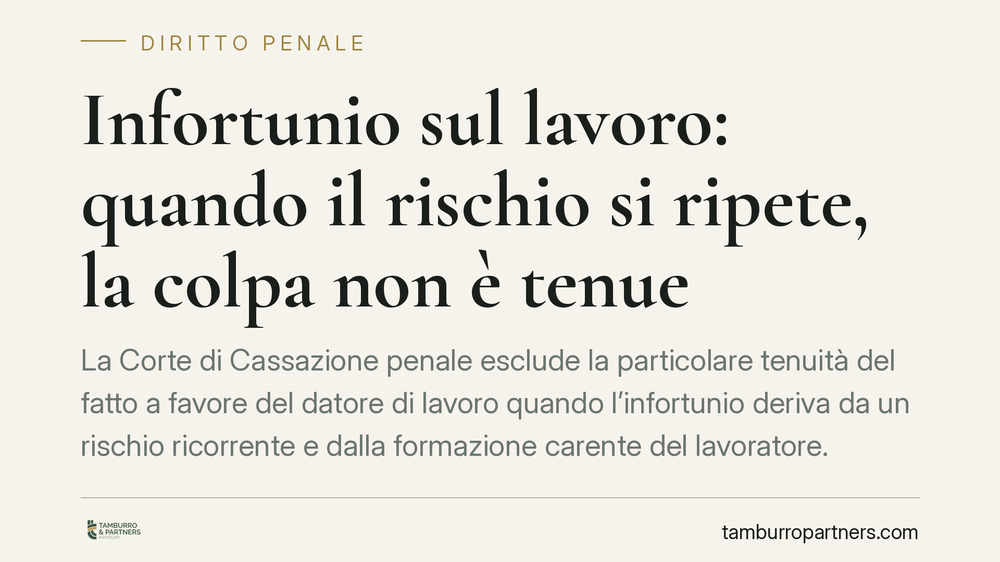

Infortunio sul lavoro: quando il rischio si ripete, la colpa non è tenue
La Corte di Cassazione penale esclude la particolare tenuità del fatto a favore del datore di lavoro quando l'infortunio deriva da un rischio ricorrente e dalla formazione carente del lavoratore. Un principio che restringe i margini di proscioglimento e rafforza il peso della prevenzione documentata. Vediamo perché la condotta imprudente del lavoratore non basta ad attenuare la responsabilità.

Il caso
Un lavoratore subisce l'amputazione di una falange durante l'uso di un macchinario. Il giudice di merito, pur ritenendo sussistente il reato, applica la causa di non punibilità per particolare tenuità del fatto (art. 131-bis c.p.), valorizzando la disattenzione del lavoratore come fattore riduttivo della colpa del datore.
Il Procuratore della Repubblica impugna. La Cassazione penale accoglie il ricorso e annulla: la negligenza del lavoratore infortunato non può attenuare la responsabilità del datore quando la formazione è carente e il rischio che si è concretizzato era prevedibile e ricorrente.
*(Numero e anno della sentenza sono in corso di verifica sulla fonte ufficiale: riportiamo il principio di diritto, non il dato identificativo non ancora confermato.)*
L'inquadramento normativo
La contestazione tipica in questi casi è quella di lesioni colpose ex art. 590 c.p., aggravate dalla violazione delle norme antinfortunistiche (art. 590, co. 3, c.p.). La gravità della lesione — l'amputazione della falange rientra tra le lesioni gravi — si qualifica ai sensi dell'art. 583 c.p., che non è norma incriminatrice autonoma ma definisce quando la lesione è grave o gravissima.
La posizione di garanzia del datore discende dall'art. 2087 c.c. e, in modo puntuale, dal D.lgs. 81/2008, che impone obblighi specifici: valutazione dei rischi, formazione e informazione dei lavoratori, adozione di misure tecniche e organizzative. La formazione, in particolare, non è un adempimento formale: è una misura di prevenzione a tutti gli effetti.
Il principio di diritto
L'art. 131-bis c.p. consente di non punire quando l'offesa è di particolare tenuità e il comportamento non è abituale. La valutazione, però, deve considerare le modalità della condotta e il grado della colpa.
La Corte afferma un punto netto: quando il rischio si ripete periodicamente ed è quindi noto e prevedibile, e quando manca una formazione adeguata e documentata, la colpa del datore non può dirsi tenue. L'eventuale imprudenza del lavoratore non interrompe il nesso causale né riduce il rimprovero mosso al garante, perché proprio la prevenzione dei comportamenti disattenti rientra tra i suoi obblighi.
In sostanza: non si può delegare al lavoratore la gestione di un rischio che la legge affida al datore.
Implicazioni pratiche
Per il datore di lavoro e per il preposto, la pronuncia ha ricadute concrete.
Prima: l'argomento difensivo fondato sulla distrazione del lavoratore perde efficacia quando il rischio era ricorrente e la formazione insufficiente. Non è una scriminante, e non basta nemmeno a far scattare la non punibilità per tenuità.
Seconda: l'esito penale non resta confinato al processo penale. In caso di sentenza di condanna, questa fa stato nel successivo giudizio civile di risarcimento quanto all'accertamento del fatto, della sua illiceità e della responsabilità (art. 651 c.p.p.). Diverso è il caso del proscioglimento per particolare tenuità, la cui efficacia negli altri giudizi è regolata dall'art. 651-bis c.p.p. Qui il punto è che, esclusa la tenuità, la strada verso la condanna — e verso il risarcimento — resta aperta.
Terza: la formazione documentata diventa il discrimine tra colpa lieve e colpa piena. Senza prova della formazione erogata, l'azienda parte in posizione difensiva debole.
Cosa fare in concreto
- Documentate ogni attività formativa: registri firmati, contenuti, date, aggiornamenti periodici. Ciò che non è provato, in giudizio, è come se non esistesse.
- Mappate i rischi ricorrenti connessi all'uso di macchinari e aggiornate il documento di valutazione dei rischi dopo ogni near miss o infortunio.
- Verificate l'effettività delle misure, non solo la loro adozione formale: controlli sul campo, segnalazioni dei preposti, protezioni realmente installate e funzionanti.
- Chiarite la catena delle deleghe in materia di sicurezza, con atti conformi all'art. 16 D.lgs. 81/2008, per individuare con certezza i garanti.
- Rivolgetevi a un legale tempestivamente in caso di infortunio: le scelte dei primi giorni incidono sull'intera strategia difensiva, penale e civile.
La prevenzione, in questa materia, non è solo un dovere: è anche la migliore difesa.
---
*Contributo informativo a cura di Tamburro & Partners - Avv. Giuseppe Tamburro. Non costituisce parere legale.*
Ogni condominio ha una storia a sé.
Se gestisci un'amministrazione e vuoi un confronto su una specifica questione condominiale, scrivi allo studio. Ti rispondiamo entro un giorno lavorativo.